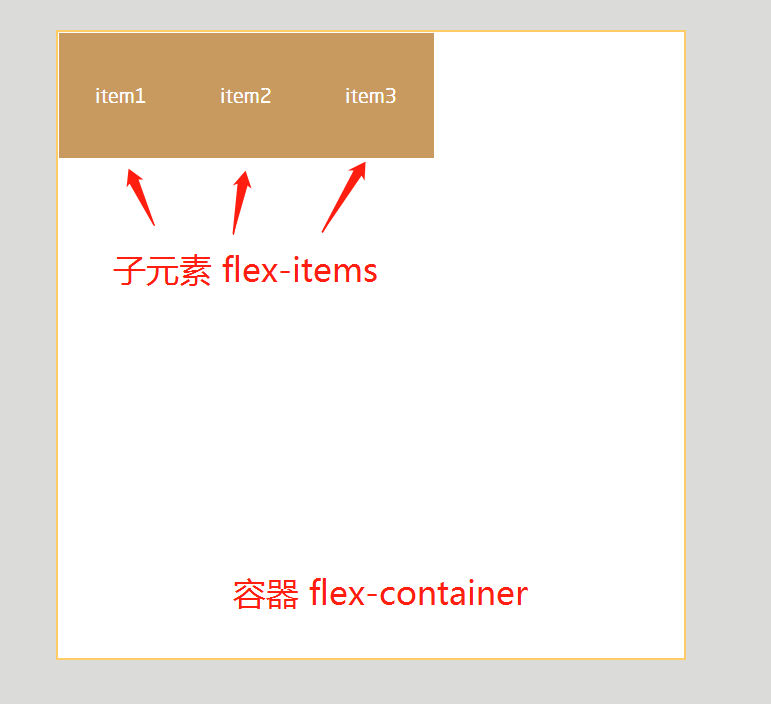
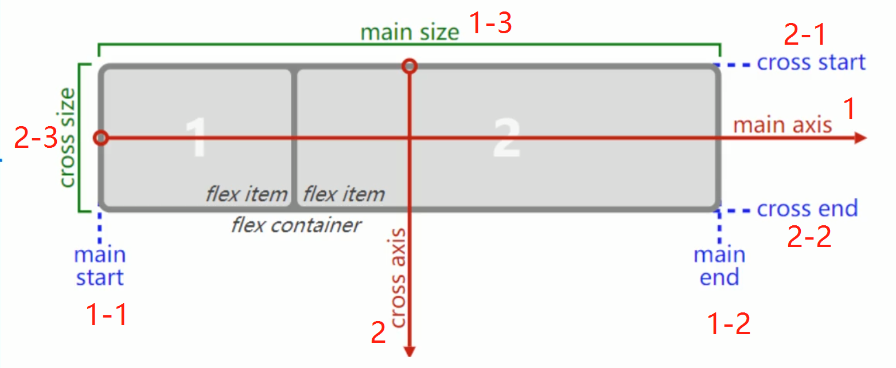

概念
容器属性
元素属性
在线工具
概念
flex container
容器
flex items
子元素
当容器开启flex布局的时候,容器就是:flex container、子元素:flex items
开启flex布局方式:
display:flex;
display:inline-flex;

flex布局模型
主轴 main axis 1
开始位置 main start 1-1
结束位置 main end 1-2
主轴的宽度 main size 1-3
交叉轴 cross axis 2
开始位置 cross start 2-1
结束位置 cross end 2-2
交叉轴的宽度 cross size 2-3

容器flex container属性
flex-direction 方向布局
决定主轴的方向
row 默认是沿着 主轴 的 开始位置 往 结束位置排布(从左到右)
row-reverse 反向(从右到左)
column (从上到下)
column-reverse 反向(从下到上)
justify-content 主轴对齐
决定flex-items在container 主轴的对齐方式
flex-start 默认值 从主轴 开始位置 开始
flex-end 从主轴 结束位置 开始
center 居中对齐
space-between 分散对齐,两边贴着
space-evenly 分散对齐,间距相同
space-around 分散对齐,两边距离是中间的一半
align-items 交叉轴对齐
决定flex-items 在 container 交叉轴的对齐方式
normal 默认值,items没有高度的时候：cross size 改为auto,也就是高度直接撑开夫级高度
flex-start 顶部对齐
flex-end 底部对齐
center 居中对齐
baseline 基数对齐
根据第一个item的文字居中对齐··
flex-wrap 切换[单 多行]
决定flex-items在flex-container,宽度超出的时候一行还是多行
nowrap 默认值,不换行,宽度超出的时候回挤压
wrap 多行
wrap-reverse 反向
align-content 多行交叉轴对齐
但有多行的时候,决定items的对齐方式
stretch 默认值,拉升没啥用吧~
flex-start 顶部对齐
flex-end 底部对齐
center 居中对齐
space-between 分散对齐,上下贴着
space-evenly 分散对齐,上中下平均
space-around 分散对齐,上下是中间的一半
元素flex items属性
order 排序顺序
数值：正整数/负整数/0，数值越小越靠前
默认值0
flex-grow 成长宽度
总和大于 1，就会等分
总和小于 1，容器是占不满的！
最终宽度不能超过 max-width 和 max-height
flex-shrink 成长缩小
1 默认情况下就是收缩的
总和大于 1 会伸开
总和小于 1 会收缩
最小不能小于 min-width 和 min-height
flex-direction 方向布局
row
默认,从左到右
row-reverse
反向,从右到左
column
从上到下
column-reverse
反向,从下到上
justify-content 主轴对齐
flex-start
默认, 从主轴 开始位置 开始
flex-end
从主轴 结束位置 开始
center
居中对齐
space-between
分散对齐,两边贴着
space-evenly
分散对齐,间距相同
space-around
分散对齐,两边是中间的一半
align-items 交叉轴对齐
normal
默认,items不设置高度,夫级高度auto
flex-start
顶部对齐
flex-end
底部对齐
center
居中对齐
between
基数对齐
flex-wrap 切换[单 多行]
nowrap
默认,不换行,宽度超出挤压
wrap
多行
wrap-reverse
反向
align-content 多行交叉轴对齐
stretch
默认,拉升
flex-start
顶部对齐
flex-end
底部对齐
center
居中对齐
space-between
分散对齐,上下贴着
space-evenly
分散对齐,上中下平均
space-around
分散对齐,上下是中一半
添加
删除
item1
item2
item3